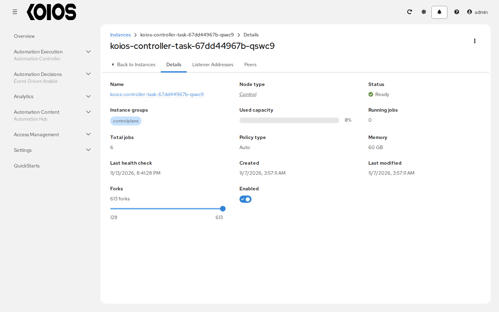
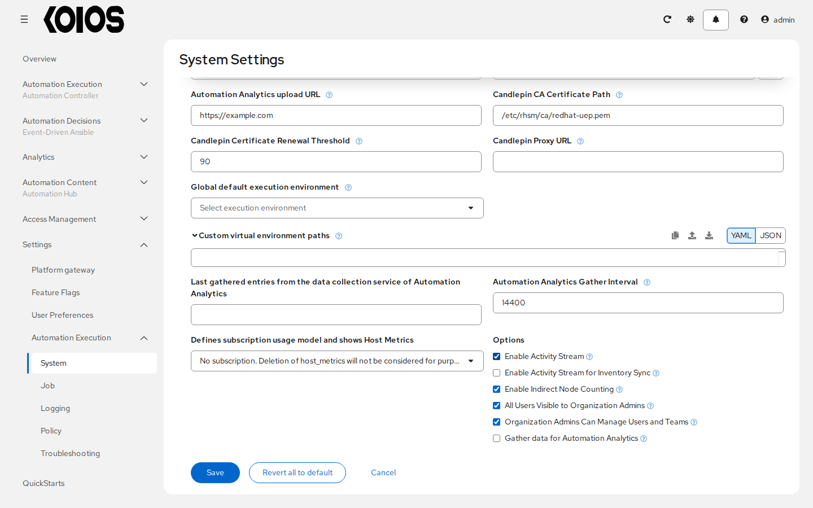

14. Improving Automation Controller Performance
Tune Koios Automation Platform against a representative workload and measured resource use. Historical controller benchmarks, fixed node ratios and database-connection formulas from other installation methods are not sizing guarantees for this operator deployment.
By default, jobs run in container group pods. External execution nodes are an additional execution path, while the controller’s web and task pods provide API, scheduling and event-processing capacity. More execution capacity alone does not increase the controller’s ability to process output or serve API requests.
14.1. Understand the workload
The task manager assigns eligible jobs to execution resources. Dispatch workers submit work through Receptor and consume results. Callback receiver workers process queued job events and write them to the database. The web service serves API requests and job output. PostgreSQL, Redis, the gateway and cluster storage can each become a bottleneck.
Measure at least:
Peak concurrent jobs, inventory sizes, playbook forks and job duration.
Event volume and size, including verbosity and large module results.
API traffic and concurrent users viewing job output.
CPU and memory use, CPU throttling, pod restarts, storage latency and available space.
Job queueing time, Kubernetes pod startup time and callback-processing delay.
Use a baseline before changing a setting, change one constraint at a time, and compare the same workload afterwards. A larger capacity estimate is not evidence of higher throughput.
14.2. Execution capacity
Remote execution instances report CPU and memory capacity estimates. capacity_adjustment selects a point between the smaller and larger estimate; it is not a percentage of live CPU utilization. The controller does not continuously adjust scheduling to the actual resource consumption of each playbook.
Open Automation Execution > Infrastructure > Instances, select an execution instance and inspect Used capacity, Running jobs, Memory and Forks. Adjust Forks conservatively and monitor real utilization. A disabled or unavailable execution instance does not provide usable job capacity. Hop nodes route mesh traffic and have no execution capacity; hybrid nodes are not part of this operator deployment.

For an ordinary playbook job, task impact is based on the smaller of inventory host count and requested forks, plus one. A forks value of zero uses the default of five in that calculation. Job slicing and other job types have their own accounting, so do not multiply a fixed forks figure by every job type.
Container groups are limited differently: their configured maximum concurrent jobs and forks constrain controller scheduling, while the pod specification’s resource requests and limits, namespace quota and cluster capacity determine whether Kubernetes can run the job pods. A pod can remain Pending after the controller has assigned it. See Instance Groups and Execution Environments.
Use dedicated instance groups when workloads need separate execution resources. Verify the job template’s chosen group and fallback behavior rather than assuming a group name alone isolates all workloads.
14.3. Scale through the operator
Declare deployment changes in the KoiosPlatform rather than manually scaling generated Deployments or changing files inside containers. See KoiosPlatform.
Relevant controller fields under spec.controller include:
task_resource_requirementsandweb_resource_requirementsfor requests and limits of the corresponding controller containers.ee_resource_requirementsfor the control-plane execution environment container, which is distinct from a container group’s job pod specification.task_replicasandweb_replicasfor separate task and web scaling.extra_settingsfor controller settings that are not exposed as writable UI fields.
Scaling web replicas can improve API capacity, while task replicas add scheduling and event-processing resources. Confirm database and Redis capacity, project storage access and cluster scheduling before increasing replicas. The platform gateway also has its own replicas and resource requirements under spec.api; increasing controller web replicas alone does not scale the public gateway.
14.3.1. Callback receiver workers
JOB_EVENT_WORKERS controls the callback receiver worker count. AWX defaults to four workers. The controller operator derives a larger value from spec.controller.task_resource_requirements.limits.cpu when the converted CPU limit has an integer value greater than four. An explicit controller extra setting can override the generated value.
More workers can process more queued events, but also consume memory, database connections and CPU. Compare event-processing delay and CPU pressure before increasing workers. Worker count is not automatically sized from every Kubernetes node’s total CPUs.
14.3.2. Job scheduling
START_TASK_LIMIT limits how many jobs a task manager run starts; its default is 100. TASK_MANAGER_TIMEOUT and TASK_MANAGER_TIMEOUT_GRACE_PERIOD bound scheduling work. A larger start limit can lengthen a scheduler run and does not supply missing execution capacity or fix pod scheduling failures.
Inspect task_manager__schedule_seconds and pending-job causes before tuning these settings. Configure deployment-level values through spec.controller.extra_settings; see Deployment-managed settings.
14.4. Monitor the platform
Automation controller exposes Prometheus-format data at /api/controller/v2/metrics/. By default, access requires a controller system administrator or system auditor. Use a suitably authorized integration credential; do not expose the endpoint anonymously merely to simplify scraping.
Useful metrics include:
awx_database_connections_total: current database connections.callback_receiver_event_processing_avg_seconds: average processing time per event within callback receiver batches.task_manager__schedule_seconds: time spent in a task manager scheduling run.
Interpret these with Kubernetes container metrics and database, Redis and storage monitoring. A slow callback receiver can delay visible output even when execution nodes finish work quickly. Monitor gateway and other platform services separately; controller metrics are not a complete platform health check.
14.5. Event volume and live output
Use appropriate job verbosity and avoid unnecessary output of large data structures. Extra logging increases event ingestion, database storage and browser work; it can also expose sensitive module results.
Controller settings include MAX_EVENT_RES_DATA, EVENT_STDOUT_MAX_BYTES_DISPLAY and MAX_WEBSOCKET_EVENT_RATE. They affect different stages of result storage, output display and WebSocket delivery; inspect their source and observed effects before changing them. A truncation limit is not a substitute for provisioning adequate event-processing capacity.
UI_LIVE_UPDATES_ENABLED=False suppresses most detailed event broadcasts in the controller, while retaining a minimal set of event notifications. It is not exposed by the current settings UI. If needed, declare it through spec.controller.extra_settings and verify the effect on the current job output UI.
Enable Activity Stream, under Settings > Automation Execution > System, controls audit activity capture. It does not disable live job events and should not be used as a substitute for the live-update setting.

14.6. Database and storage
Database needs depend on concurrent requests, task replicas, callback workers, job start/finish bursts and other platform components. Do not apply a fixed connection count per legacy controller host. Monitor connection use and retain headroom for migrations, maintenance and recovery.
For the platform-managed PostgreSQL deployment, declare resources in spec.database.resource_requirements and PostgreSQL parameters in spec.database.postgres_extra_settings. The operator generates and mounts the configuration. For an external database, coordinate changes with its administrator. Do not edit a running pod’s postgresql.conf as a persistent configuration method.
Keep autovacuum enabled and monitor table growth, dead tuples and maintenance activity. Size shared_buffers, work_mem, maintenance_work_mem and max_connections together with the database container’s memory limit. work_mem can be consumed by multiple operations within multiple concurrent queries; dividing total RAM by a connection count is not a safe universal sizing rule.
Also monitor project, job-artifact and database storage, as well as retained data. Use supported management-job retention settings and backup policies; avoid deleting files or database rows manually to recover space.
14.7. API clients
Use paginated queries, bounded concurrency and retry backoff. Batch operations where the API supports them, and use notifications instead of frequent job-status polling when appropriate. Do not use an arbitrary per-node connection limit as a platform-wide recommendation.
For automation clients, use platform gateway tokens with the permissions they need; see API tokens and OAuth applications. Measure the public gateway and controller API paths together when investigating authentication or request latency.